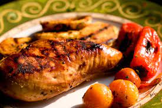

Easy Grilled Lemon Chicken Recipe

Description
Very easy to make recipe. The longer you marinate the chicken, the better it is!
Ingredients:
- ½ cup fresh lemon juice
- ½ cup soy sauce
- ½ teaspoon ground ginger
- ¼ teaspoon ground black pepper
- 4 (6 ounce) skinless, boneless chicken breast halves
Steps:
- Rinse chicken breasts and pat dry with paper towels. Stir together the lemon juice, soy sauce, ginger, and black pepper in a bowl; pour into a large, resealable plastic bag. Add the chicken breasts, seal the bag, and massage to evenly coat chicken with lemon juice mixture. Place in refrigerator to marinate at least 20 minutes, or up to 24 hours.
- Preheat an outdoor grill for medium-high heat. Lightly oil grill grate, and place about 4 inches from heat source.
- Drain and discard marinade from the bag, and place chicken on preheated grill. Cook until chicken is no longer pink and juices run clear, 6 to 8 minutes on each side.